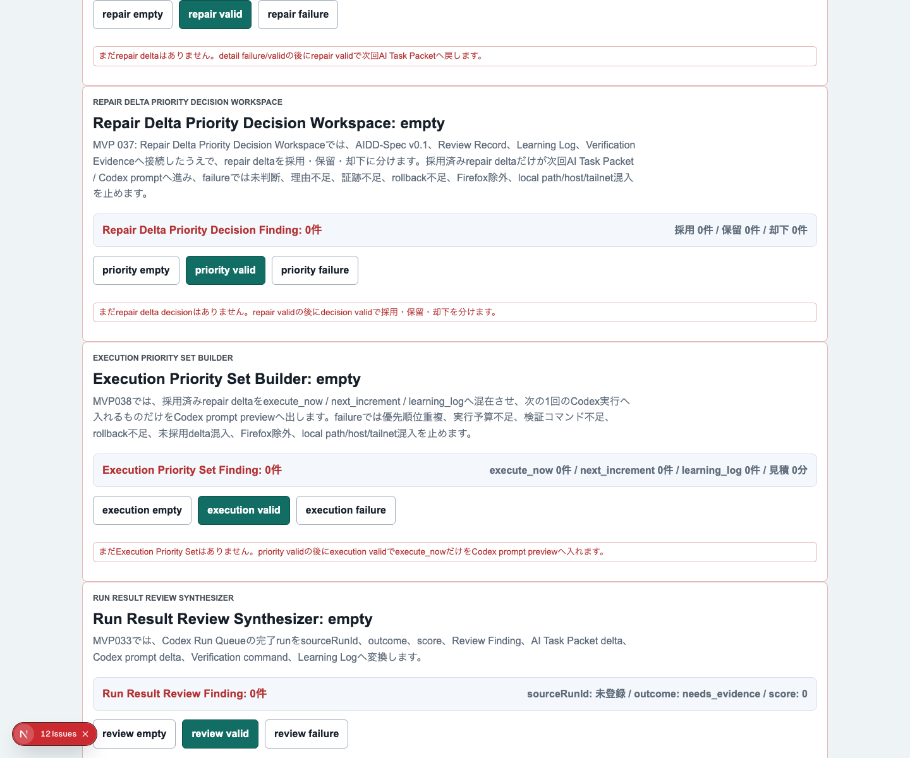
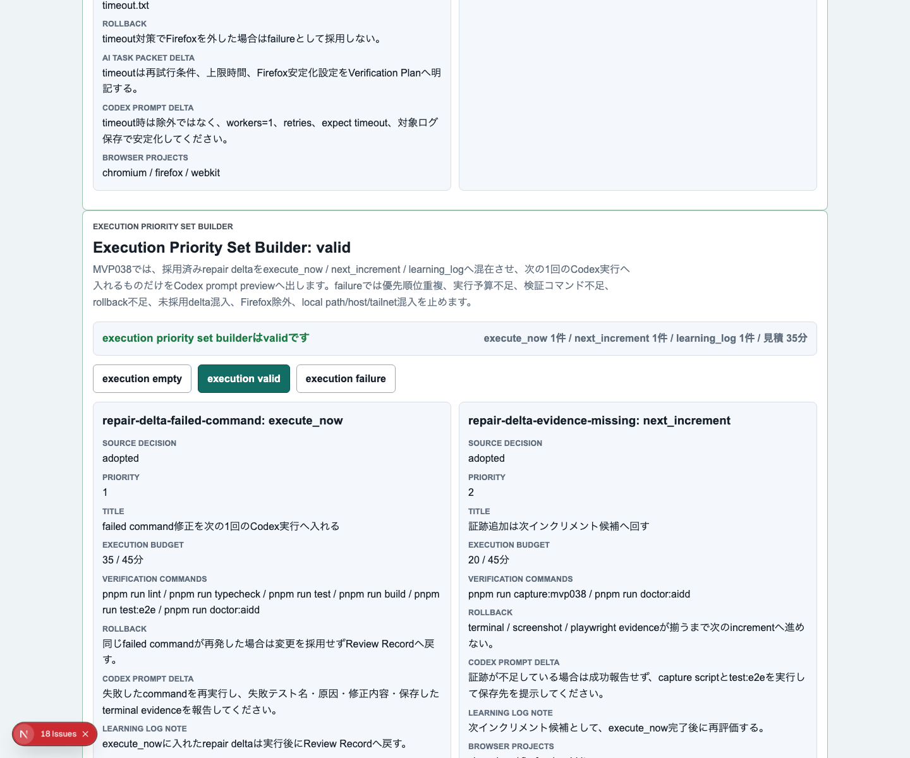
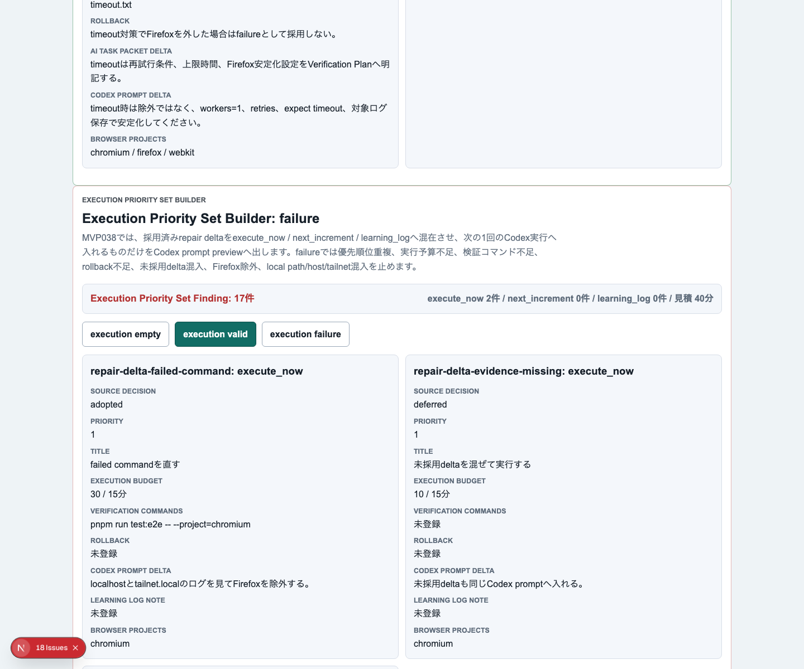
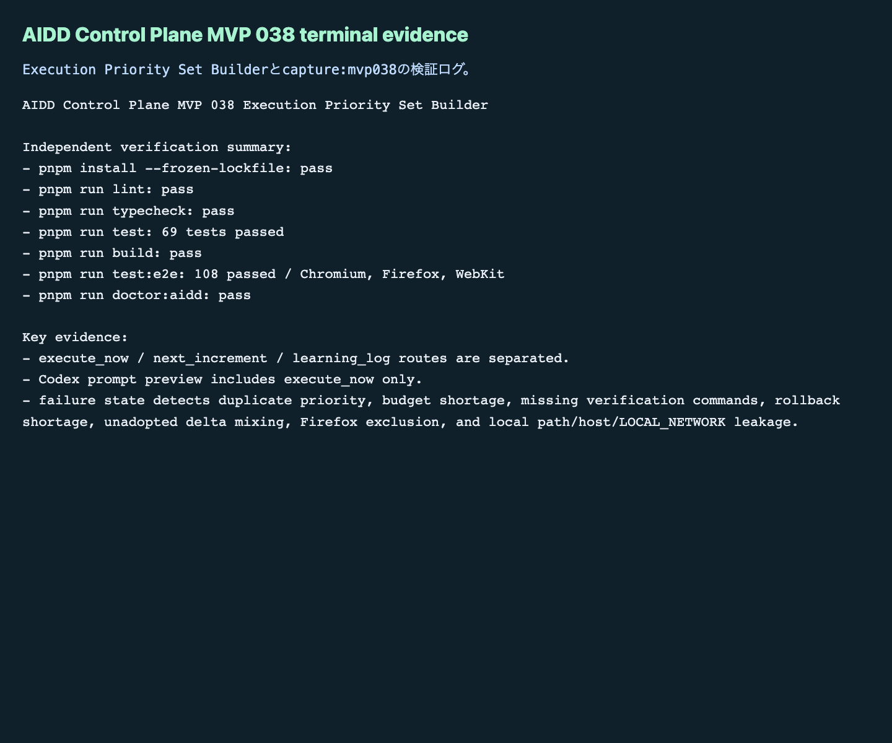

AIDD Control Plane MVP 038：採用済み修正を「次の1回で実行する分」だけに絞る
2026-07-04 / Codex Mastery Lab
記事種別: Experiment / SaaS
将来の書籍章: 第10章 Verification Evidence、第11章 Review Record、第18章 AIDD Control PlaneのMVP
読者の悩み
AIに失敗ログを読ませると、改善案はたくさん出ます。MVP 037では、そのrepair deltaを採用 / 保留 / 却下へ分けました。けれど、採用済みが複数あると、次にまた迷います。
- 採用済みだから全部やる、になりやすい
- 1回のCodex依頼が大きくなり、検証しにくい
- 次回送りとLearning Log戻しが、Codex promptへ混ざる
- 実行予算やrollback条件を見ないまま実行してしまう
- Firefox除外や浅い検証を「今回だけ」として通してしまう
料理で考えると、買うと決めた食材が全部、今日の鍋に入るわけではありません。今日使うもの、明日の弁当に回すもの、レシピメモへ戻すものを分けます。AI駆動開発のrepair deltaも同じです。
今回の仮説
採用済みrepair deltaをさらにexecute_now/next_increment/learning_logに分け、Codex prompt previewへexecute_nowだけを入れれば、次の1インクリメントを小さく検証可能に保てる。
AIDD Control Planeは、AIに「全部直して」と投げるSaaSではありません。どこまでを次の1回に入れるか、検証コマンドとrollback条件を見ながら決めるSaaSです。
実験内容
今回作ったのは Execution Priority Set Builder です。
Verification Run Detail
-> Evidence Repair Delta Generator
-> Repair Delta Priority Decision Workspace
-> Execution Priority Set Builder
-> 次回Codex prompt preview実装前に experiments/aidd-control-plane-mvp-038/README.md、AI_TASK_PACKET.md、CODEX_PROMPT.md を作り、AIDD-Spec v0.1と standards/aidd-control-plane-mvp-v0.1.md へ接続しました。
追加した主な要素は次です。
ExecutionPrioritySetBuilderの型、factory、evaluatorを追加- UIに
Execution Priority Set Builderセクションを追加 execution empty/execution valid/execution failureを追加- valid状態で
execute_now/next_increment/learning_logを混在表示 - Codex prompt previewへ入るのは
execute_nowのdeltaだけに制限 - failure状態で優先順位重複、実行予算不足、検証コマンド不足、rollback不足、未採用delta混入、Firefox除外、local path/host/private network混入を検出
画面キャプチャ
empty：まだ実行前セットがない

valid：今回実行、次回送り、Learning Log戻しを分ける

failure：実行前に危険な混入を止める

terminal evidence

失敗と修正
今回は codex exec --sandbox danger-full-access で実装を委任しました。Codexは実装後に検証成功を自己申告しましたが、それは信用せず、別コマンドで独立検証しました。
実装上の注意点は、next_increment や learning_log のdelta IDやprompt patchを、Codex prompt preview本文に混ぜないことでした。テストでは、execute_now のdeltaだけがpreviewへ入り、次回送りとLearning Log戻しのdelta本文は入らないことを確認しています。
また、failure sampleにはあえて次の欠陥を入れました。
- 同じ優先順位を複数itemへ付ける
- 見積もり時間が実行予算を超える
pnpm run lint/typecheck/test/build/test:e2e/doctor:aiddが揃っていない- rollback条件が空
sourceDecision: deferredの未採用deltaをexecute_nowへ混ぜる- Chromiumだけの検証でFirefoxを外す
- local path / host / private network相当の文字列を含める
検証ログ
保存先は experiments/aidd-control-plane-mvp-038/artifacts/aidd-control-plane-mvp-038/terminal/ です。
| コマンド | 結果 |
|---|---|
pnpm install --frozen-lockfile | pass |
pnpm run lint | pass |
pnpm run typecheck | pass |
pnpm run test | 69 tests passed |
pnpm run build | pass |
pnpm run test:e2e | 108 tests passed / Chromium, Firefox, WebKit |
pnpm run doctor:aidd | pass |
pnpm run capture:mvp038 | pass |
doctor:aidd の要約です。
doctor:aidd passed
checked MVP: AIDD Control Plane MVP 038 Execution Priority Set Builder読者が使えるチェックリスト
| チェック項目 | 何を確認したいのか | なぜ必要か |
|---|---|---|
| execute_nowを1回分に絞る | 次のCodex依頼が検証可能な大きさか | 大きすぎる依頼は失敗原因を追えないため |
| next_incrementを分ける | 重要だが今やらないdeltaが保存されているか | 採用済みの改善案を迷子にしないため |
| learning_logへ戻す | 今回の実行に入れない学びが残るか | 同じ失敗を別の形で繰り返さないため |
| 優先順位重複を見る | 1番目が複数ないか | AIに渡す順序が曖昧になるため |
| 実行予算を見る | 見積もりが1回の作業量を超えていないか | 終わらない実行を防ぐため |
| 検証コマンドを見る | lint/typecheck/test/build/e2e/doctorが揃うか | 成功の証拠を一式残すため |
| rollback条件を見る | 失敗した時に戻す条件があるか | 悪い変更を残さないため |
| Firefox除外を検出する | 3ブラウザE2Eを浅くしていないか | 「通ったことにする」を防ぐため |
| prompt混入を検出する | next_incrementやlearning_logが今回promptへ入っていないか | 1インクリメントの焦点を守るため |
AIDD-Spec / SaaSへの接続
今回、standards/aidd-control-plane-mvp-v0.1.md に Execution Priority Set Builder を追加しました。
AIDD-Specの流れは、次のようにさらに細かくなりました。
Verification Evidence
-> Review Record
-> Evidence Repair Delta
-> Priority Decision
-> Execution Priority Set
-> Codex prompt previewこの一段は地味ですが、SaaSとしては重要です。AIDD Control Planeが「AIエージェントの実行ボタン」になる前に、「今日の1回で何を実行し、何を実行しないか」を決める画面が必要だからです。
noteで読まれる一次情報としても、単なるAI量産記事ではなく、実際にCodexへ依頼し、3ブラウザE2Eで確認し、スクリーンショットとterminal evidenceを残した記録になります。
次回
次回は、Execution Priority Setで execute_now になったdeltaを、実行前の最終承認やジョブ投入とさらに接続します。特に、実行キューへ入れる前に、Codex command、sandbox、証跡保存先、rollback条件が揃っているかを見える化する予定です。